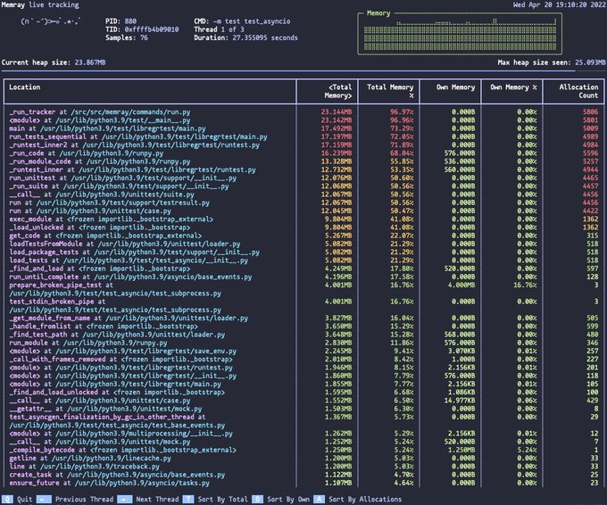

Week 16
#H2X in Agreement With @TrelleborgGroup Municipality to Supply #Hydrogen Buses and Waste Truck - as part of the company's development of local, sustainable energy solutions - https://t.co/kw6ClCGlmP #HydrogenNow #HydrogenEconomy #HydrogenNews #H2 #CleanHydrogen #Decarbonise pic.twitter.com/jvfA723Tlb
— Fuel Cells Works (@fuelcellsworks) April 21, 2022
H2 View: "Denmark’s green logistics hub [Fredericia] is to be expanded by Everfuel and Taulov Dry Port to become the country’s largest hydrogen station"
H2 View: "H2X Global has revealed that it will supply the first of its high floor hydrogen buses into Sweden through Trelleborg Energi"
"@fuelcellsworks
.@nationalgridus Announces Historic Fossil-Free Plan That Includes Green Hydrogen for Massachusetts and New York. Gas and electric networks to be fossil-free by 2050"
"@fuelcellsworks
The HY4 [fuel-cell] passenger aircraft sets new world record, flying above 7,000 ft"
H2 View: "Walmart to acquire 20 tonnes of liquid hydrogen per day from Plug Power"
:) Cash cow.. Very good
India Times: "Dung power: India taps new energy cash cow"
They are producing synthetic natgas? Methane can leak from that. H2 would be better. American Raven SR has awesome tech. Egypt is building 1 GW waste-to-h2 plant.
Cow dung!
The South African: "Cow Dung power: India is tapping into a new energy source"
The construction video looks great
"@FuelCell_Energy
@Toyota's Port of Long Beach.. fuelcell plant will provide a steady supply of #hydrogen to power Toyota’s zero-emission fuel cell trucks & consumer vehicles at the @Shell hydrogen station"
H2 View: "Hexagon Purus acquires 40% stake in Cryoshelter for its innovative liquid hydrogen storage technology"
Holywood will soon lose the skill of making big tent movies; stuff that appeals to many, albeit differently. Example Forest Gump. Libs could watch it and laugh at FG, conservatives would be like 'that guy is exactly like me'. But FG still achieved things, that was a positive.. Now u always have to bang on the drum, for something.. Massive propaganda.
Why did Chapek get pulled into that mess on public schools, sex ed etc? Completely unnecessary #Disney
Lota culture war material triggered from Florida these days.
Yonderboi - I Am Cgi #music
Lockdown parties.. bad bad. Britain's culture code for itself is CLASS. By ignoring the rules BJ said "I'm above you" (reaches emo brain, very powerful). It's particularly damaging for BJ bcz his whole shtick was being "against the elites". "Elites" wanted Bremain, "people" needed Brexit. Cameron looked like an "elite", BJ was the pudgy, everyman looking guy (both grads of Eton but ssshhh), so when BJ did the elite thing, it became 10 times more damaging.
The new off kilter ideology backdrop cld also be partly why UK BJ was too gung-ho on Russia (even before the war); conservatives are generally hawkish, well, this was one 'conservative' thing he could still do..
Politics in some Western countries are off-kilter.. During the UK trucker shortages I actually heard PM BJ say "well if there are shortages, maybe businesses should pay better wages". A Tory PM. Asking higher wages. It's like someone said the moon is made of cheese, or I walked to school and back, up the hill both ways.. It's good to hear but from a supposedly con party?
"@1st1
WOW. Bloomberg finally opensourced memray—a new versatile memory profile for Python. Can't way to use it"

A cow gives 240 kg.. Not 'eating a cow' every month, let's relax.
For 80g prot intake daily, for 10 days, u'd need roughly 3 kg of red meat. Dam.
It's not uncommon to get 70-80% mass reduction on poultry/meat after dehydration. Makes sense we know we are 70% water. That hints at max protein content; cant possibly get more than 30% protein from red meat (lit says 26%), bcz the rest is water.
Many simple dishes out there. Toss raw spinach, diced onions, some olive oil together, cook 5 mins medium heat. Wait until cold, mix in plain yogurt. Boom.
{kind=link}
Similar to Persian borani, Greeks have a version too. Rich in lutein, iron and with yogurt u get lots of calcium, protein.
Scott Adams says it's about eating the right food, gastro knowledge will help you enjoy the right food.
The persecution of the religious folk played a major role for enshrining freedoms into law in US, not "the affluents" feeling slighted by bakers when denied a cake.
Things go off the rails sadly when they ask children to "choose" a gender identity (be individual, early). But these are kids at an age when they are busy playing make-belief games. One thinks he is a robot, the other an elf.. One says he is a garbage truck. How do you handle that one? Now your kid is a garbage truck. Do you treat him as such?
US libs are so fervent believers of individuality that they will create previously non-existing categories to give ppl "more opportunities" to exercise that individuality. Notice the ever increasing new letters to that already huge moniker, L, G, B, T, Q, it goes on, I, A, 2S,.. They added a + on there too just to signal there could be more. Pick any letter, pick two or three, see how that makes you unique.
Netflix stawk in trouble. But their financials until 21Q4 has been good; stellar even. High GPM.
import pandas as pd, yf
df = yf.get_income('NFLX')
pd.set_option('display.max_columns', None)
print (df[['grossProfit','totalRevenue','grossProfitMargin']])
Breakdown grossProfit totalRevenue grossProfitMargin
endDate
2021-03-31 3294.77 7163.28 45.9953
2021-06-30 3323.77 7341.78 45.272
2021-09-30 3276.88 7483.47 43.7882
2021-12-31 2469.74 7709.32 32.0358
Al Jazeera: "Fix poverty first to counter China, Solomon Islanders tell West"
The Guardian: "Tuesday night, news broke that the Pacific nation [Solomon Islands], less than 2,000km from Australia's east coast, had signed a security deal with China"
Al Jazeera: "China’s Xi says talks, not sanctions, should resolve disputes"
TDB: "Noam Chomsky Is Right, the U.S. Should Work to Negotiate an End to the War in Ukraine"
WSJ: "Russia Says It Controls Mariupol"
All Californians deserve access to options that will drive a more sustainable future.
— SoCalGas (@socalgas) April 5, 2022
That’s why we’ve proposed to develop Angeles Link: a #green hydrogen pipeline system designed to significantly cut greenhouse gas emissions.
More @SeeNewsRenew: https://t.co/0Q4i2x80bU pic.twitter.com/YyUU4PREqC
Forbes: "Angeles Link - by California utility SoCalGas, [will produce] hydrogen from electricity generated by wind and solar power.. [Its] infrastructure will include hundreds of miles of new pipelines necessary to move the hydrogen to market... Once completed, the company says the project will “allow four natural gas plants and 20 percent of big diesel container trucks to convert to zero-emission hydrogen fuel – with the potential to reduce diesel fuel use by as much as 3 million gallons per day in California.” SoCalGas also estimates that its new green hydrogen pipeline system will deliver the clean energy equivalent of almost 25 percent of the natural gas delivered by SoCalGas today"
H2 View: 'The Brazil-Germany Alliance for Green Hydrogen has launched a new Innovation Programme aiming to enhance the hydrogen value chain within Brazil and strengthen cooperation between the countries"
H2 View: "Two hydrogen hubs within Western Australia have received $140m bipartisan federal support in order to turn the region into a booming capital for hydrogen technologies"
H2 View: "German green energy hub central to overcoming European energy crisis..[TES Chief Commercial Officer Otto Waterlander: Production] will increase to 250 TWh per year and more than five million metric tons of hydrogen in a final stage. The green hydrogen will be produced using exclusively renewable sources, mainly solar and in several cases, wind and/or hydroelectricity.'"
H2 View: "Morocco seeks to establish a gas infrastructure worthy of the 21st century, said minister.. Leïla Benali... Morocco is also called upon to become a leader in competitive hydrogen, said Ms. Benali, stressing the importance of the gas infrastructure of the 21st century “which can allow us to mix hydrogen like the countries which mix in existing gas pipelines 30 pc of hydrogen.”
Houston Chronicle: "Texas companies embrace hydrogen to retain energy crown.. The world is determined to move away from burning fossil fuels, but Houston could remain the energy capital of the world thanks to a coalition of Texas businesses and nonprofits betting on hydrogen helping the city retain the crown. The gamble is sound. Climate activists agree that hydrogen molecules in either gas or liquid form will help replace oil, natural gas and coal"
Hey it's not like the world needs the extra capacity
Al Jazeera: "[Libya's] National Oil Corporation warns of a ‘painful wave of closures’ after forces in the east expanded their blockade of the sector"
Some versions of HS missiles dont even have explosives - just sheer kinetic energy; a mass of metal crushing into something else at Mach 5 speed or greater. Simple, fundamental works; mass, speed, pressure, heat.
Hypersonics can be a big problem for ships.. I dont think a swarm of HS can be stopped, they could potentially take out an aircraft carrier if attacker knows where they are. With high-res satellite imaging pinpointing a fleet could be possible too. Then during a war satellites become a target. Enter Space Force. It goes on and on.
I hear there are some engine issues though..
J-20 is CH next-gen combat fighter plane. I dont think it can take on F-35s, esp F-22s one-on-one, but I believe they designed this thing with "a certain mission" in mind. It has long range.
"J-20 fighters start patrols in East, South China Seas"
"South Korea, Japan, China and Australia have all boosted their naval power as competition for resources heats up."
Police Interrogations: Last Week Tonight with John Oliver
Mapping software Leaflet is great, but it needs backend connectivity. That spiffy dynamic zoom-in feature doesn't work by magic.. It gets additional data as needed from a server to make that happen.
IoT is a foolish new "industry", just like 3D TVs, battery-electric cars, or Pokémon Go. Less connectivity is needed not more. Aim for offline, standalone, intermittent.
"@doctorow
IoT service shuts down its cloud hosts without warning; execs scrub their Linkedin profiles of the company's name; parent company deletes press-release trumpeting the acquisition, and every single device they've ever sold is bricked"
😂 😂 😂
Arstechnica: "[The smart home company] Insteon looks dead—just like its users’ smart homes"
FT: "Chinese immigration consultants say inquiries from wealthy individuals trying to leave the country have surged following the lockdown of Shanghai"
NYT: "Yemen’s Houthis Went From Ragtag Militia to Force Threatening Gulf Powers.. Iran’s cultivation of the Houthis over the years of war in Yemen has armed them with missiles and drones, endangering.. Saudi Arabia and the United Arab Emirates"
Now I got to the parts where even Strang is hand-waving. Danger zone
That's still about same as the Texas landmass. Not bad.
"About 90% [of Oz] is classed as uninhabitable [leaving 768,685 km2 of habitable land]".
Oz Economist Saul Eslake #ABC: "Schemes that allow people to pay more for housing than they otherwise would, will result in more expensive housing, rather than more people owning housing. I dont think it's any coincidence home ownership rate has been declining ever since the first census after the first homeowner's grant was introduced by the Menzies government in 1964.. The reality that all politicians are aware of is that there is at least 11 million voters who own at least one property, within that there are at least two million who own two or more, and of course those voters want governments to keep doing things that push house prices up... [the latest gov proposal] is yet another example of that kind of scheme"
Sky News: "Government expands home buyer’s scheme for thousands of Australians"
SoCalGas: Introducing Angeles Link
H2 Fuel News: "The new [Siemens] production lines for the hydrogen electrolyzers are already being constructed. They are being set up on 2,000 square meters (over 6,500 square feet) of the Berlin location and will come with an estimated cost of €30 million ($33 million). Production will begin in 2023 at the Huittenstrasse where there is already an existing production hall to be converted"
Mi chiamano il fottuto dottore
È molto buono mi piace
"Il 99% della rete di Snam è già ‘hydrogen ready’"
If that ship carried H2 (as liquid, or LOHC) nothing wld happen. No pollution.
Al Jazeera: "Ship carrying 750 tonnes of diesel fuel sinks off Tunisia’s coast"
Energy is costly business; the typical 200MW natural gas plant costs a cool 100 mil $ according to CAPEX.
FT: "Planting trees in Scotland will not fix climate change"
FT: "When so many are struggling [in UK], why is it that an estimated £15bn worth of means-tested benefits go unclaimed in the UK every year?"
"@SloopJD
Liberals last week: "Everyone needs to go out and buy a #Tesla."
Liberals this week: crickets"
Woke has history.. Post 9/11 there was Jack Bauer, James Blonde, Bourne beating up on 'terrorists'.. After Iraq mishaps, financial crisis, there was partial return to normality, some backlash, minor Woke - not too bad. It was after Trump ppl really went batshit, 'oh no it aint over' kind of realization set it, then we had mega backlash, mega Woke, overcuck. Recent commentary here have mostly been on this last phase.
Not refering to JC, no
Orcheis malakas
Lota commentary on one word: tetelestai
The claim is BW III will be based on a new commodity based Asian currency - replacing the dollar-based system.
Pozsar: "If we are right, and if this is a “crisis of commodities” – a 2008 of sorts thematically, if not in terms of size or severity – who will provide the backstop? We see but only one entity: the PBoC! Western central banks cannot close the gaping “commodities basis” because their respective sovereigns are the ones driving the sanctions. They will have to deal with the inflationary impacts of the “commodities basis” and try to cool them with rate hikes, but they will not be able to provide the outside spreads and won’t be able to provide balance sheet to close “Russia-non-Russia” spreads. Commodity traders won’t be able to either. Remember that Glencore rose from the ashes of Marc Rich + Co, and with Switzerland along with the sanctions, Swiss-based commodity traders will think twice about arbitraging the spreads.
But the PBoC [Chinese Central Bank] can…
.. as it banks for a sovereign who can dance to its own tune. To make things more complicated, China is probably thinking deep and hard about the value of the inside money claims in its FX reserves, now that the G7 seized Russia’s...
The Fed and other central banks will be able to provide liquidity backstops.. .. but those will be Band-Aid solutions. The true problem here is not liquidity per se. Liquidity is just a manifestation of a larger problem, which is the Russian-non-Russian commodities basis, which only China will be able to close"
Pozsar: "[I]f you believe that the West can craft sanctions that maximize pain for Russia while minimizing financial stability risks and price stability risks in the West, you could also believe in unicorns"
By CC=1 he means individual commodity prices are going up and down in sync.
Pozsar: "Commodity correlations are also at 1, which, to stress, is never a good thing. But that’s precisely what happens when the West sanctions the single-largest commodity producer of the world, which sells virtually everything..
The commodities market is much more financialized and leveraged today than it was during the 1973 OPEC supply crisis, and today’s Russian supply crisis is much bigger, much more broad-based, and much more correlated. It’s scarier"
Did Russkies leave that big fat pile of reserve dough out there so they could be seized, giving them excuse to demand rouble for gas? Makes u wonder.
Pozsar: "Bretton Woods II was built on inside money [as in petrodollar], and its foundations crumbled a week ago when the G7 seized Russia’s FX reserves"
The Finance Twitter, #fintwit, is abuzz with that Zoltan Pozsar article, talking about Bretton Woods III.
Flournoy is in there too - war-mongering freak bitch. They destroyed Libya.
The Lever: "The Defense Industry’s Ukraine Pundits.. To explain the crisis, corporate news networks are leaning on hawkish ex-military officials — without disclosing their current defense industry ties"
H2 View: "Australian hydrogen vehicle manufacturer H2X is looking to further advance its innovations, having entered into a partnership with KTM Technologies to enhance both the vehicle chassis and construction programmes"
H2 View: "Chilean green hydrogen project progresses.. Total Eren has made great progress on its large-scale hydrogen project, that will see 10GW of installed wind capacity and 8GW of electrolysis capacity"
WION: "More than 4.7 million Ukrainians have fled their country in the 50 days since Russia invaded, the United Nations said Thursday"
If a 1945 newspaper headline was 'Desperate Harry Truman may use nuclear weapons', what would the world's advice to the Japanese be?
WION: "Desperate Putin may use nuclear weapons, says CIA Chief"
"Rouble trouble". Then there will be no rouble 'rubble'
"Rouble Trouble: Why the New Russian Gas Payment Scheme Matters"